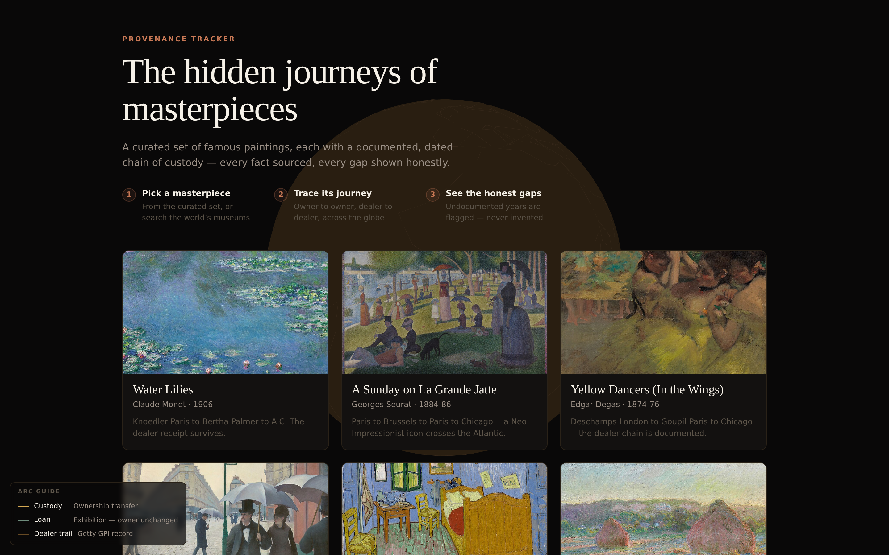
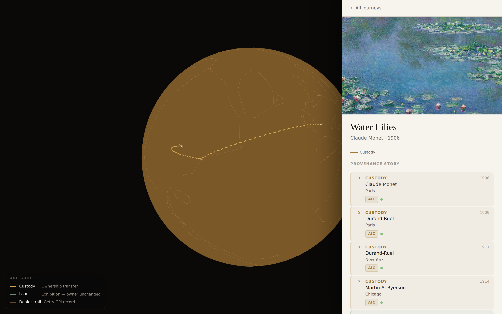
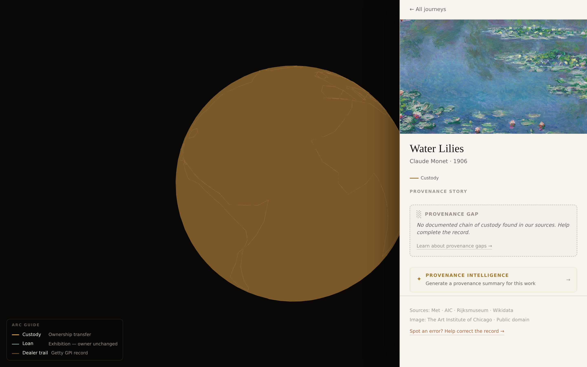
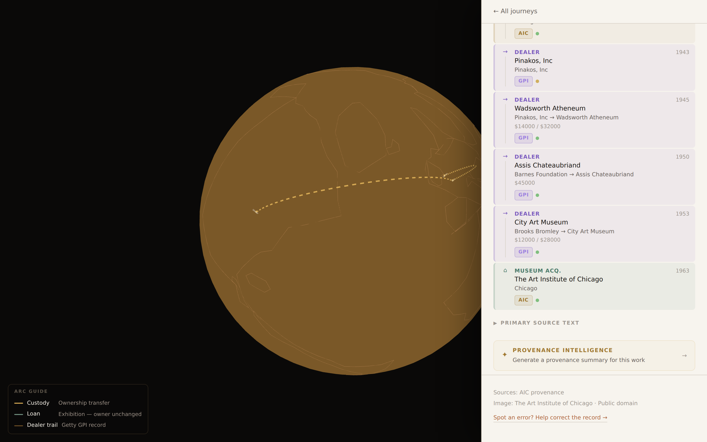
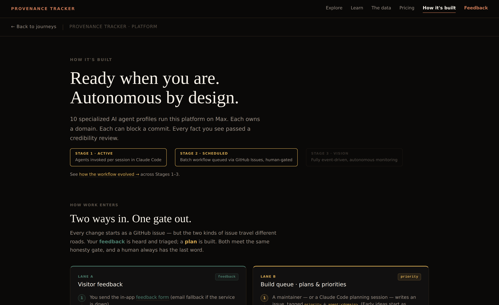

Provenance Tracker · 바사해 (바쁜 사람들을 위한 해커톤)
명화의 숨겨진 여정
출처가 분명하고, 빈틈은 솔직하게 — 유명 회화의 소유 이력(chain of custody)을 3D 지구본 위에 그립니다.
AI 에이전트 팀과 함께 약 1.5일 만에 혼자 완성 · 안나영 · 2026
16년의 공백
모네가 1906년 수련(Water Lilies)을 완성했을 때, 그림은 파리에 있었습니다.
시카고 미술관이 그 그림을 샀을 때, 그림은 시카고에 있었고요.
그 사이에는 무슨 일이 있었을까요?
미술관 설명은 “1922년 이전 출처 불명”이라고만 적혀 있습니다.
수천만 달러짜리 그림의 소유 기록에 16년의 공백(gap)이 있는 거죠.
출처 · docs/PITCH.md
Part One
프로젝트
프로방스란 무엇인가 · 공백이 왜 중요한가 · 짧은 데모
프로방스란, 그리고 왜 중요한가
Provenance(프로방스) = 작품의 기록된 소유 이력입니다.
법적으로
나치 시기 약 60만 점이 약탈됐고, 그중 20% 미만만 신원이 확인됐습니다.
1933–1945년 사이의 공백은 환수 소송에서 결정적 단서입니다.
상업적으로
끊김 없는 소유 이력은 경매에서 실제 프리미엄으로 이어집니다.
200만 달러짜리 작품은 수 주간의 수작업 검증이 필요하죠.
지적으로
가장 흥미로운 역사는 바로 그 공백 속에 숨어 있습니다 — 전시(戰時) 이동, 개인 소장, 유산 매각.
출처 · BUSINESS_CASE.md · vault/concepts/Provenance Gap.md
모든 것이 세워진 단 하나의 원칙
정직함이 곧 해자(moat)다.
- 실시간 “현재 전시 중(on view)” 주장 금지 — 이를 검증할 공개 API는 없습니다.
- 화면의 모든 사실에는 보이는 출처가 붙습니다 (Met / AIC / Rijksmuseum / Wikidata / Getty / RKD).
- 데이터가 부족하면 공백(gap)으로 표시 — 절대 지어내지 않습니다.
- 소유(custody)와 전시 대여(loan)를 절대 혼동하지 않습니다 — 대여는 이동이 아닙니다.
- 이미지는 퍼블릭 도메인 작품만, 기관 크레딧과 함께.
이 규칙은 모든 변경마다 CI의 “정직성 게이트(honesty gate)”가 기계적으로 강제합니다 — 파트 2에서 자세히.
출처 · CLAUDE.md (운영 계약)
데모 · 첫 화면

엄선된 퍼블릭 도메인 명화 8점 · 3D 지구본 · 아크 범례(소유 / 대여 / 화상)
데모 · 여정, 라이브로

금색 소유 아크 파리 → 뉴욕 → 시카고 · AIC 배지 + 신뢰도 점이 붙은 타임라인
화면에 보이는 것
파리(모네, 1906) → Durand-Ruel 파리 → Durand-Ruel 뉴욕 →
Martin A. Ryerson(시카고) → 시카고 미술관.
각 단계마다 날짜, 출처 배지,
그리고 신뢰도 점(confidence dot)(초록/금색/회색)이 붙습니다.
소유 아크대여 아크화상 아크
데이터 · src/lib/featured-provenance.json (사전 파싱, 런타임 비용 0)
데모 · 무엇이 다른가

정직한 빈 상태(empty state) — 실제 스크린샷, 지어낸 이력 없음
공백은 결함이 아니라 기능이다.
출처에 그 기간의 기록이 없으면, 솔직히 그렇게 말합니다:
“출처에서 기록된 소유 이력을 찾지 못했습니다.”
검토한 출처를 명시하고(Met · AIC · Rijksmuseum · Wikidata),
이미지에 크레딧을 달고, 누구나 “오류 신고(Spot an error)”를 할 수 있습니다.
라이브 스크린샷 · 정직한 빈 상태 UI
데모 · 미술관이 보여주지 않는 화상 계층

보라색 GPI 화상 카드: 판매자 → 구매자, 가격, 날짜 — 1963년 미술관 취득으로 마무리
퍼블릭 도메인 화상 레코드 4,388건.
Getty Provenance Index — 미국 최대 화상 M. Knoedler & Co.(1872–1970)와
Goupil의 손글씨 장부를 앱에 심었습니다.
각 레코드: 누가, 누구에게, 얼마에, 언제, 어디서 — 모두 출처가 있고 원본 원장에 링크됩니다.
GPI · Tier A
출처 · docs/DATA_SOURCES.md · scripts/seed-goupil.mjs
모든 사실은 어디서 오는가
신뢰도로 등급을 매긴 8개의 라이브 출처.
Tier A 미술관 공식 / 카탈로그 레조네
Met · 시카고 미술관 · Rijksmuseum · Getty Provenance Index · RKD · Cleveland
Tier B 구조화된 공개 데이터
Wikidata (P276 위치, P580/P582 날짜) · Europeana
솔직한 현실
Wikidata는 작품당 위치를 약 1개(현재 미술관)만 줍니다. 여정을 만들 수 없어요.
진짜 이력은 미술관 산문(prose)에 있습니다 — 추출하고, 지오코딩하고, 화상 레코드와 병합하죠.
출처 · docs/DATA_SOURCES.md
Part Two
AI 에이전트 팀
사람은 덜 일하고, 에이전트가 더 일하게 한 방법
바사해의 과제는 "제품을 보여줘라"가 아니라 "어떻게 에이전트가 일하게 만들었는지 이야기하라"였습니다. 지금부터가 그 이야기예요.
어떻게 시작했나 · 솔직한 버전
저는 늘 좋은 사람들과 함께 좋은 제품 만드는 게 좋아서 해커톤에 나가요.
그런데 올해는 시간이 없어 혼자 해야 했고, 게다가 AI 과열에 지쳐 도구를
따라가는 것도 멈춘 상태였죠. 그래서 목표를 정했어요: 그래도 팀과 함께 하자 — 에이전트 팀과.
제약: 최소한의 아이디어, 최소한의 도구, 최소한의 시간.
본업 때문에 마감 1.5일 전에야 시작했습니다.
Phase 1 — 그냥 대화
Claude Pro + Sonnet + 나, 아이디어를 주고받았어요. 제 관심사 — 항공기·선박 트래커, 오픈소스 지도
제품을 좋아한다 — 에서 출발해 니치를 제안받았죠: 미술 프로방스. 교육적이고, 우울하지 않고, 실제 가치가 있는.
저는 전문가가 아니고, 이게 “정답”도 아닙니다. 맨바닥에서 시작한 솔직한 경로를 공유하는 거예요 — 비전공자분들이 저보다 토큰을 덜 낭비하시도록.
솔직한 실수 #1
플러그인을 너무 많이 깔아 토큰을 태웠다.
초반에 “혹시 몰라서” 플러그인과 MCP 연결을 잔뜩 붙여 놨어요.
하나하나가 쓰지도 않는 컨텍스트를 불러왔고 — 보잘것없는 MVP 하나에 쓸데없이 많은 비용이 들었습니다.
교훈: 가볍게 시작하세요. 도구는 그 작업에 필요할 때만 추가합니다.
불러온 컨텍스트는 매 턴마다 비용으로 돌아옵니다.
팀 · 전문가 13 + 오케스트레이터 1
한 명의 만능 비서가 아니라, 전문가들의 스튜디오.
빌더 · Sonnet
provenance-globe (UI/3D)
provenance-data (API/병합)
dataviz-engineer (타임라인/아크)
도메인 전문가 · Opus
art-historian (출처 신뢰도)
art-insurance-advisor
provenance-strategy
design-director
내러티브 + 게이트 · Opus
provenance-story (데모/피치)
provenance-honesty-review (차단 권한)
운영: feedback-triage · 그리고 Stage 3 센티넬 4종(데이터 품질·정직성 회귀·retro) — 제안 상태, 기본 비활성.
출처 · .claude/agents/ · AGENTS.md
…그리고 이건 사이트의 실제 페이지입니다

/team — “10개의 전문 AI 에이전트 프로필이 Max로 이 플랫폼을 운영합니다. 각자 도메인을 갖고, 각자 커밋을 차단할 수 있습니다.”
팀이 토큰 AND 사람 노력을 아끼는 이유
- 도메인별 라우팅 — 작업마다 맞는 전문가가 처리, 중복 컨텍스트 없음.
- 타입 우선(types-first) — 데이터 에이전트가 UI보다 먼저
types.ts에 형태를 정의 → UI가 완성된 척 데이터를 지어내지 못함.
- 병렬 워크트리(worktree) — 여러 에이전트가 충돌 없이 동시에 작업.
- 작업 큐는 GitHub Issues — 라벨이 문법:
priority + agent:domainproposalpaused
- 예산 상한 — 실행당 최대 토큰·최대 PR 수를 설정 파일 하나에서 관리.
출처 · AGENTS.md · .claude/orchestration.json
에이전트를 신뢰할 수 있게 만드는 단 하나의 아이디어
십 게이트(ship gate).
build→
serve→
verify (계약 + 정직성)→
commit ✓
“에이전트의 보고서 — ‘제가 X를 만들었어요’ — 는 결과가 아니라 제안이다.
게이트가 결과다.”
에이전트는 절대 직접 git commit하지 않습니다. ship.mjs가 빨간불이면
그 작업은 존재하지 않아요 — 고치고 다시 돌립니다. 사람이 모든 커밋을 읽지 않아도 됩니다.
출처 · scripts/ship.mjs · scripts/verify.mjs
보호 계층 · 거짓말도 고장도 못 내게
정직성 게이트 (CI)
모든 PR을 grep으로 검사: “on view”, “probably owned”, (0,0) 좌표, 플레이스홀더 금지.
빌드 + 토큰 드리프트
TypeScript strict 빌드 통과 필수; 디자인 토큰이 원본에서 몰래 어긋날 수 없음.
메트릭 하트비트
데이터 품질의 오프라인 스냅샷; 회귀(날짜 없는 소유, null 좌표) 시 경고.
CodeQL + 시크릿
보안 · 시크릿 스캔 — 키는 절대 클라이언트 코드에 없음.
브랜치 보호
에이전트는 절대 머지하지 않음. main으로의 모든 PR은 사람이 머지.
One fact, one home
상태 중복 없음; 날짜 박힌 죽은 문서 없음; 교훈은 INSIGHTS.md로 병합.
출처 · .github/workflows/ · docs/decisions/0001
Phase 2 · 내가 출근한 사이 일하는 에이전트
전날 밤에 계획을 다 적었습니다.
요청 목록을 파일 하나에 잔뜩(제 TOMORROW.md). 아침에 배치 런(batch run)을
켜고 — 본업으로 출근했어요.
오케스트레이터가 전문 에이전트들에게 작업을 분류·분배했죠. 제가 시킨 대로 토큰을 아끼게요.
폰으로 추적
이건 로컬이 아니라 클라우드에서 돌기 때문에 가능합니다. 회의 사이사이 폰으로 PR이
올라오는 걸 지켜봤어요.
(이걸 위해 Max를 결제 — API 크레딧보다 토큰 예산. 배우려고 쓴 값으로 충분.)
출처 · .claude/workflows/batch-agent-squad.mjs
Phase 1 ⇄ Phase 2 · 그리고 찾아온 혼돈
손으로 하는 세션(Phase 1)과 배치 런(Phase 2)을 여러 기기에서 오가며 좋은 데모를
얻었지만 — 지저분한 저장소가 남았습니다: 죽은 기능, 잃어버린 계획, 흩어진 세션.
GitHub이 중추가 됐습니다.
계획 → Issues(휘발되지 않고 지속). 사용자 피드백 → Issues(이메일에서 분리) →
feedback-triage 에이전트 → 내가 검토하는 PR.
⎇
선택 · GitHub 보드
Issues 목록 / Projects 보드(라벨: priority · proposal · feedback) 스크린샷. 원하면 GitHub에서 실제 캡처.
출처 · docs/WORKFLOW_STAGES.md
모델 · Stage 1 → 2 → 3
“자율성은 다이얼이고, 그것이 키우는 것은 시작(initiation)이지 거부권(veto)이 아니다.”
Stage 1 수동(현재) → Stage 2 예약(연결됨, 비활성) → Stage 3 이벤트 기반(비전).
모든 단계에서 사람이 머지합니다. 그 경계는 움직이지 않아요.
출처 · /workflow · docs/decisions/0002
Part Three
바쁜 사람을 위한
솔직한 후기
바사해 · 다음 1인 빌더에게 해 주고 싶은 말
다음 빌더에게 해 주고 싶은 말
- 기능 하나당 세션 하나. 좁게 잡고, 끝내고, 배포하세요.
- 끝내지 않은 계획은 잃어버린 계획. 계획은 GitHub Issues로 — 기기 간에 지속됩니다.
- GitHub > 마크다운 큐. Issues·라벨·Actions·브랜치 보호가 사무를 대신 봐 줍니다.
- 가드레일은 에이전트를 정직하게 — 그리고 서툰 제 git 손에서
main을 지켜 줍니다.
- 가볍게 시작하고, AI 슬롭을 피하세요 — 일회용 문서 천 개 금지; one fact, one home.
3년 · 세 번의 해커톤
1년차
시니어를 위한 앱. 바이브 코딩을 배움. 영감·스토리·코드·디자인이 맞물린 좋은 팀.
2년차
MCP + Figma + Claude로 위트 있는 웹앱. 같은 팀 시너지.
3년차 · 이번
가장 “나다운” 것: 스토리, 철학, 곳곳의 검증 계층. 가장 적은 시간, 가장 완성도 높음. 그러나 혼자.
솔직한 긴장
말과 생각만으로 만드는 일은
놀랍도록 생산적이고 — 약간 중독적입니다.
의도만으로 제품이 좋아지는 걸 지켜봤어요. 짜릿하죠. 동시에 외롭습니다.
에이전트는 강력합니다. 하지만 사람들로 이뤄진 팀만이 주는 에너지와 완결감이 있어요.
다음은
- Phase 3 — 이벤트 기반 설계는 있지만 실행에 API 크레딧이 필요. 아직 못 갔습니다.
- 진짜 사람의 피드백 — 해커톤은 끝났고, 이제 전문가의 비평을 원합니다.
- 에이전트 팀 재설계 — 배운 것으로 명단을 다시 짜기.
- 진짜 목표 — 협력하는 사람 팀 안에서 에이전트 루프를 극대화. 사람 대신이 아니라, 사람을 증폭하는.
출처 · docs/WORKFLOW_STAGES.md (Stage 3)
덜 만들고.
정직하게 배포하고.
사람을 데려오자.
Provenance Tracker · 바사해
라이브 데모 & 저장소 — github.com/nyahn01/provenance-tracker
감사합니다 — 여러분의 피드백을 듣고 싶어요.